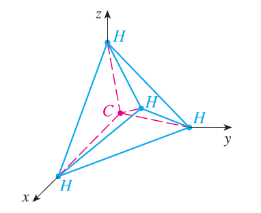

A molecule of methane, CH\(_4\), is structured with the four hydrogen atoms at the vertices of a regular tetrahedron and the carbon atom at the centroid. The bond angle is the angle formed by the H-C-H combination; it is the angle between the lines that join the carbon atom to two of the hydrogen atoms. Show that the bond angle is about \(109.5^\circ\). [Hint: Take the vertices of the tetrahedron to be the points (1, 0, 0), (0, 1, 0), (0, 0, 1), and (1, 1, 1), as shown in the figure. Then the centroid is \((\frac{1}{2}, \frac{1}{2}, \frac{1}{2})\).]
